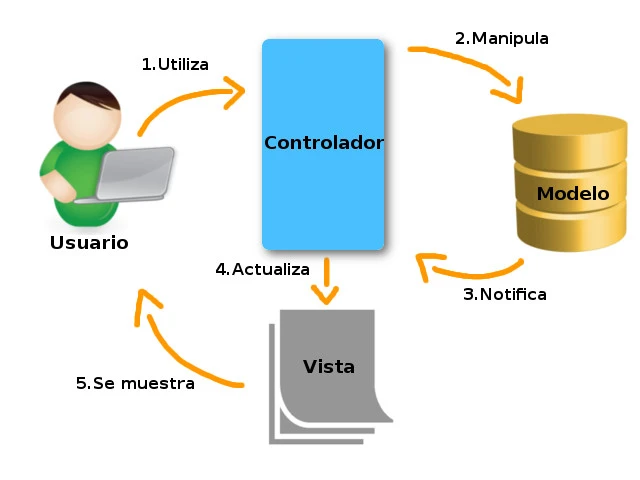
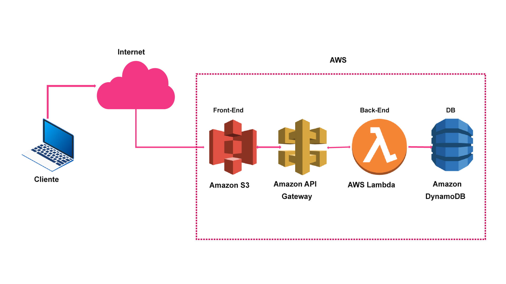
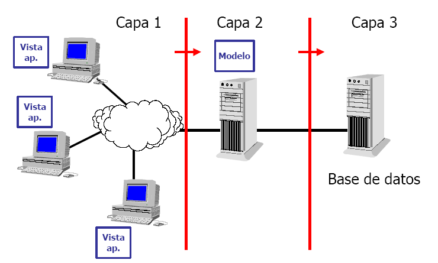

- Arquitectura Cliente-Servidor:El modelo básico implica la separación de la interfaz de usuario (cliente) y la lógica de la aplicación (servidor).

- Arquitectura MVC (Modelo-Vista-Controlador):Organización de la aplicación en modelos, vistas y controladores para separar las responsabilidades y facilitar la mantenibilidad. 
- Arquitectura Serverless:Eliminación de la necesidad de gestionar servidores, centrándose en funciones individuales ejecutadas en la nube. 
- Arquitectura de Tres Capas: División en capas de presentación, lógica de negocios y acceso a datos para facilitar la escalabilidad y el mantenimiento. 
- Arquitectura de Microservicios:Descomposición de la aplicación en servicios independientes para facilitar la escalabilidad y la implementación continua.